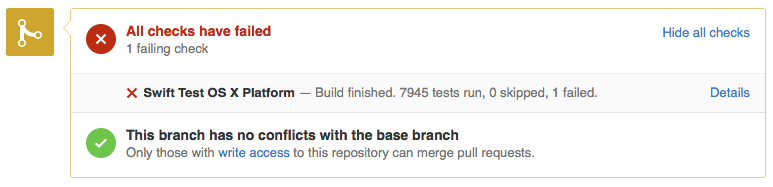

Swift Continuous Integration
The Swift project follows an incremental development model, and utilizes continuous integration (CI) testing of changes in pull requests before merging as a core tool for maintaining project stability. The system produces the snapshot builds posted on swift.org, and runs tests against active branches. It is also used as part of the review process to run tests against pull requests before committing them.
Configuration
Our continuous integration system is powered by Jenkins and currently supports building and testing on Mac OS X, Ubuntu 14.04, and Ubuntu 15.10. Testing on the iOS simulator is also supported.
Currently, there are 15 OS X nodes, running Mac OS X 10.11.1 (15B42), and building with Xcode 7.2 GM. There are also 2 Linux nodes, running Ubuntu 14.04, and Ubuntu 15.10.
Job organization
Continuous integration jobs are organized within the CI system in the following categories:
- Development - All jobs that are configured to build with master branch
- swift-2.2-branch - All jobs that are configured to build with swift-2.2-branch
- Packages - Jobs which create toolchains for the master and swift-2.2-branch branches
- Pull Request - Jobs which verify pull requests from GitHub before merging into master.
Job Configuration
| Job | OS | Build Type |
|---|---|---|
| Swift Incremental | OS X Ubuntu 14.04 Ubuntu 15.10 |
Incremental |
| LLDB Incremental | OS X Ubuntu 14.04 Ubuntu 15.10 |
Incremental |
| Swift (Tools Opts+Assert, Stdlib DebugInfo+Assert, Test Simulator) | OSX | Clean |
| Swift (Tools Opts+Assert, Stdlib Opt+DebugInfo+Assert, Test Simulator) | OSX | Clean |
| Swift (Tools Opts+Assert, Stdlib Opt+DebugInfo, Test Simulator) | OSX | Clean |
The build script command is listed in the description for each job. Most build script commands use a build system preset in the command which contains further build and test settings. Documentation of the presets is contained in the build script source.
Usage
There are several ways in which you can interact with the swift.org CI system:
- Integration job status - you can view the build and test status of all integration jobs at https://ci.swift.org.
- Email notifications - if you have committed a change that breaks the build or fails tests, you will automatically be notified via email.
- Tests on pull requests - when making a change via pull request, your changes will be tested before being integrated, and results will be posted back inline to the pull request.
Pull Request Testing
When a change is reviewed on a pull request, a member of the Swift team will trigger testing by the CI system. Tests can be triggered to run on Mac OS X, Linux, or both platforms.

Testing status is then posted inline with the pull request, showing that a test is in progress. You can click the “details” link to go directly to the status page for the test in progress.

When tests complete, that result is also updated in the pull request

If there are issues found during testing, you will get a link to the details of the failure. 
It is expected that changes meet the quality standards for the Swift project before they are committed to the development branch, and you are responsible for fixing problems found by your changes. If your changes break builds or tests on the development or release branches, you will receive email notification.
Community Involvement
The Swift project welcomes proposals from the community for adding support for other configurations.